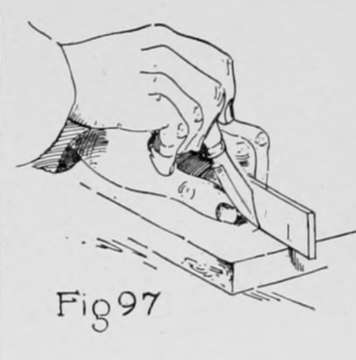
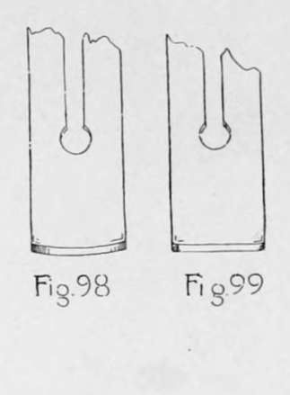
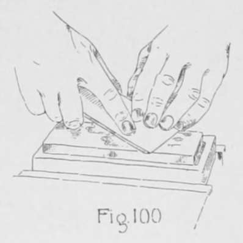
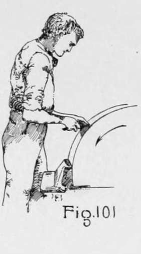

Chapter X. Application Of Principles
Description
This section is from the book "Beginning Woodwork At Home And In School", by Clinton Sheldon Van Deusen. Also available from Amazon: Beginning Woodwork At Home And In School.
Chapter X. Application Of Principles
The work outlined in the preceeding chapter has given experience in only a few of the problems a woodworker will have to meet, but the work has been presented systematically and it is believed that most workers, after completing this work, will be able to master ordinary problems in woodworking. The purpose of this chapter is to call attention to some of the principles explained in the preceeding chapters, and give some general suggestions for their application to other problems.
Laying Out
The pencil should be used for laying out work only when there is a good reason why it is better than the knife and gage.
The pencil should be used in laying out work on rough surfaces, as when framing buildings and in getting out stock from rough material, because knife lines can not readily be seen on such surfaces.
The use of the pencil should not, however, in these or other cases be an excuse for inaccurate work, for it should be the aim at all times to be as accurate as possible. It is also best to use the pencil when laying out lines for obtuse-angled edges, as was done when making the chamfer on the bread-cutting board and in making the slanting surfaces on the end pieces of the towel roller. Still another use for which the pencil is especially suited is in laying out curves.
In general, except as noted above, the gage and knife should be used. This is especially necessary where any accurately fitted joints are to be made, and in such cases it is necessary that the beam of the try-square and the gage-block be used only against the working face or joint side. A bevel-edge rule has been advised because it is easier for a beginner to use, but when using a thick-edge rule, such as is in more common use, it should be held on its edge as shown in Fig. 97.
Planing
In planing lengthwise of the grain the most important planes used are the smooth-plane, jack-plane and the jointer-plane. These are mentioned in the order of their length.
If a thick shaving is desired, as when roughing out work, the jack-plane should be used; it has an iron with the edge sharpened as shown in Fig. 98. This plane is of convenient length, and when the blade is sharpened in this manner, a thick shaving may be taken off much easier than when the iron is ground as in Fig. 99. This does not leave a good smooth surface, and therefore its use should be followed by one of the other planes.
If smoothness of surface instead of trueness is desired it may be produced more quickly by using the smooth plane which is a short plane and has a plane-iron sharpened as shown in Fig. 99. On account of the shortness of this plane it reaches the depressions in the surface, thus smoothing the entire surface quickly.
For planing large surfaces so that they are both true and smooth a jointer-plane is desirable. This is a long plane having its iron sharpened as in Fig. 99. Its length prevents the blade from cutting any from the parts which are too low, but does allow the blade to cut from the parts that are too high, thus tending to make a true surface. If two long pieces are to be glued together in the same manner as the top of the taboret, the use of the jointer-plane is very desirable in fitting the joint.
For the nonprofessional woodworker who is not doing a large amount of work and is not working on very large pieces, the work requiring these three planes may be very well accomplished by providing two plane-irons for the jack-plane, one sharpened as in Fig. 98 and the other as in Fig. 99. Many other planes for special purposes are used occasionally, but they will present little difficulty to the thoughtful worker who has followed the course as given.
The rules for planing as outlined in Chapter IV are followed when a piece is to be brought to a given length, width and thickness. The order of the steps there outlined should never be changed, but in certain cases some of the steps may be omitted. Thus in making the coat hanger it was not desirable to plane the piece to width. Occasionally a problem appears in which the planing to thickness is not desirable, and in such problems as modeling a hammer handle or conoe paddle the planing to both width and thickness may be omitted. The winding-sticks are not usually a part of the professional woodworker's outfit; he determines whether there is a wind in the working face either by sighting across the surface itself or by placing the surface in contact with some surface he knows to have no wind in it.
Chiseling
The systematic method of chiseling followed in this book may seem unnecessary to beginners, but if followed, its advantage over chiseling at random will soon be appreciated. There are two kinds of chisels in common use : The firmer chisel, being rather light in construction, is intended for hand work only; the framing chisel is stronger in construction and may be used with the mallet for heavy framing work.
Furniture Construction
A considerable amount of skill is required to make a good single joint such as was used in making the flower pot stool, but as the number of joints in a piece increase, the difficulty of making usually increases; that is, the fit of one joint in a piece of furniture usually requires some other joint or joints to be in a definite position with reference to it. For this reason great care is necessary in planning and laying out pieces of furniture. When possible, have the working faces and joint sides in such position that their surfaces shall serve as parts of the joints, as they are more likely to be true than the surfaces opposite.
Another fact that should be taken into consideration in furniture construction is that wood swells and shrinks, due to the changes of moisture in the air. Changes due to this cause are very slight lengthwise the grain, but they are sufficient to require consideration when crosswise the grain. There is a strong force causing this change and in constructing furniture it is best whenever possible to arrange so that this force can act without effecting the completed piece, The method usually employed to provide for this is known as panelling, and it should usually be employed where the parts are more than six or eight inches wide. It consists in making a frame similar to that used for the seat of the cane top stool, with groove around on the inside of the four pieces of the frame, into which a thinner piece called the panel is inserted before the frame is glued up. The panel should lack at least an eighth of an inch of being wide enough to fill the space allowed for it and when gluing up the mortise and tenon joints of the frame care should be used that no part of the panel is glued fast in the groove. After gluing it up this may be treated as a single piece and will not change in size but the panel may swell or shrink within the frame.

Continue to:
- prev: Furniture Making - Closed Mortise-And-Tenon Construction. Continued
- Table of Contents
- next: Appendix. Lists Of Tools, Materials And Dimensions, Detailed Description Of Planes, And Directions